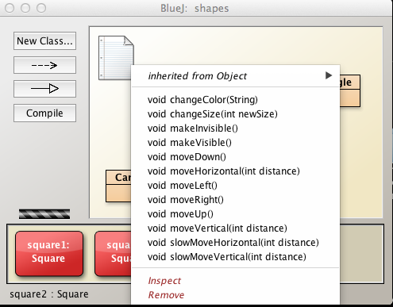

Objectives
-
Continuation of previous lab
-
Examine Java code that generates objects that we have created earlier
-
Acquire a basic understanding of
-
Gain experience in using the BlueJ terminal window
-
By the end of the lab you will be comfortable solving some simple exercises such as writing Java code to calculate properties of some of the shape objects, for example, the area and perimeter of a circle, the volume of a cone.
Object state
Close and relaunch BlueJ and open the shapes project.
Create a Square object named square1 and invoke makeVisible. A red square shold appear in the BlueJ Shapes Demo window (Figure 1).

Open the object inspector by right clicking on the Square object (the red rectangle) on the object bench and selecting Inspect, located towards the bottom of the drop-down menu.
Create a second Square object named square2 and open its object inspector (Figure 2).
As expected, the states of both objects are identical other than that one is visible and the other is invisible.
Close the object inspector and expose the methods drop-down menu (Figure 3).

Let's change the state of the individual Square objects, first square1:
changeColor: black
changeSize : 100
moveHorizontal: 100
moveVertical: 100
Ensure that square2 is visible. You should see the following in the BlueJ Shapes Demo window (Figure 4):
Inspect the state of square1 and verify that this changed state is consistent with the new values you inserted as parameters in the methods used to change the state.

Check the state of square2 and verify that it is unchanged which, again as in the previous lab section, demonstrates that changing the state of a particular object of a class has no effect on other objects of the same class (based on current class designs).
Explore Java code in BlueJ Terminal
We shall now explore some Java source code using the BlueJ Terminal to record method calls.
Close, relaunch BlueJ and open the shapes project.
Launch the terminal from the BlueJ menu (Views | Show Terminal):

Now select the terminal Record method calls (Figure 2).

In the BlueJ shapes window create a new Circle object named circle1 by selecting the Circle rectangle in the BlueJ shapes window, right clicking to reveal the drop-down menu, selecing new Circle() and naming the object circle1. See Figure 3.
 .
.
Execute the following statements in succession using the drop-down menu that appears on right clicking on the circle1 object in the object bench.
makeVisible();
changeColor("red");
changeSize(100);
moveHorizontal(100);
slowMoveVertical(100);
moveUp();
As you execute each statment in turn, a corresponding statement should appear in the terminal window. Here is the complete result (Figure 4):
Here are the Java statements that were executed as a result of the actions you took:
Circle circle1 = new Circle();
circle1.makeVisible();
circle1.changeColor("red");
circle1.changeSize(100);
circle1.moveHorizontal(100);
circle1.slowMoveVertical(100);
circle1.moveUp();
Notice the differences between what was presented in the drop-down menu and what was output to the terminal window. Here is an explanation:
Instantiation
Circle circle1 = new Circle();
Here we declare an object called circle1 of type Circle and then in the same statement we are invoking the new Java operator on the constructor of the Circle class. The result is instantiantion of the Circle class and the storing of the resulting Circle object in the variable or attribute circle1.
Method invocation
With the remaining statements, for example,
circle1.makeVisible();
we invoke methods on the circle1 object.
All these methods are defined in the Circle class and are, consequently, available to be invoked by instances (objects) of the Circle class.
The period (.) in the statement circle1.makeVisible(); is the dot operator.
An object (circle1), followed by a dot (.), followed by a method (makeVisible()), results in the method being invoked.
A semi-colon is required to terminate Java statements.
Explore Java code in BlueJ code bench
In this section of the lab we shall explicitly execute the following statements:
Circle circle1 = new Circle();
circle1.makeVisible();
circle1.changeColor("red");
circle1.changeSize(100);
circle1.moveHorizontal(100);
circle1.slowMoveVertical(100);
circle1.moveUp();
Executing Java statements individually
Close, relaunch BlueJ and open the shapes project.
Open the BlueJ code pad by selecting menu (Views | Show Code Pad):
The code pad appears in the BlueJ IDE window in the bottom right (Figure 2). A comment This is the code pad has been added to Figure 2 for clarification. Do not type this into the code pad window.
In the code pad type the following:
Circle circle1 = new Circle();
This will instantiate a Circle object named circle1. It will not, however, place a representation of the object in the object bench.
Now execute
circle1.makeVisible();
A blue circle should appear in the Blue Shapes Demo window.
Execute the remaining statements in succession in the code bench.
As you execute each statement in turn you should observe behaviour exactly similar to that in the previous lab section.
The final result is illustrated in Figure 2.

Executing Java statements as a group
-
Close, relaunch BlueJ and open the shapes project.
-
Open the BlueJ code pad by selecting menu (Views | Show Code Pad):
-
Copy all the seven statements (listed at the top of the page) and paste into the BlueJ code bench.
-
Press return.
You should see the exact same result as in Figure 2.
What conclusion can you draw from this?
Return values
Close, relaunch BlueJ and open the lab-classes project.
Create a new Student object.
Unlike in the case of Circle, the Student constructor requires two parameters, the student name and number.
These parameters are of type String and so it is necessary to enclose the data in double quotes (Figure 1).
Examine the methods associated with Student (Figure 2).

Do you notice any differences between the methods of Student class and Circle class?
Invoke the method getName. The result is illustrated in Figure 3.
The signature of the method getName is:
String getName();
Invoking getName results in an object of type String being returned or handed back to the caller of the method.
You could, for example, assign this returned data to a new local variable thus:
String studentName = student1.getName();
studentName now stores the value returned by getName().
Now change the name of the student (Figure 4).
And verify by inspecting the return object that the name has been successfully altered.

A question was posed above regarding possible differences between the methods of Student and Circle. The Circle methods are illustrated in the following Figure 6. By comparing Figure 6 and Figure 2 you will notice that the return type for all of Circle's methods is void, i.e. no data is returned, whereas some of the methods in String return values, for example
- getCredits returns an integer (type int)
- getName returns text (type String)

Objects as parameters
We can use any valid type as a parameter.
It is legal to use both primitive values and class objects.
Examples of primitives are int, float, boolean.
Examples of class objects are
- A String instance string1
- A Student instance computerScienceStudent
- A Circle instance circle1
We have already encountered a constructor that takes two String objects as parameters:
Student(String, String)
Combinations of parameter types are valid. An example is the following constructor:
public Garden(int numberTrees, TreeType beech, TreeType ash, Soil clay, Climate temperate);
Clearly all the object types used here, namely Garden, TreeType, Soil and Climate will have been defined earlier and made available to the project.
Writing an accessor for Circle class
Write an accessor method to return the area of a circle object and integrate the method into project
Preliminary information
[1] The area of a circle may be calculated from the formula
double area = 3.14159*radius*radius;
Alternatively you may import the Math library thus:
import java.lang.Math;
and use the following equivalent formula:
double area = Math.pow(radius, 2)*Math.PI;
[2] Converting from int to double types
The field type for diameter in the Circle class is int.
But calculations for area are performed using double.
A double type caters for a decimal point which an int does not.
You can make this conversion from int to double by an operation called casting. Here is a sample code snippet that shows a cast from int to double:
int diameter = 100;
double val = (double)diameter/11;
//val is approx 9.0909091 to 7 decimal places
Procedure
[1] Launch BlueJ, open shapes project and Save As as a project named shapes to session01 directory, a sub-directory of labs in workspaceBlueJ.
Using Finder (OSX), Windows Explorer or otherwise, check that you have adhered to the recommended directory struture and saved the project to the intended location (Figure 1).
Right click on the Circle class and select Open Editor.
This will open a Java file containing the code for the Circle class (Figure 2).
[2] Write the accessor getArea with the following signature:
public double getArea();
[3] When you change the Circle.java file the rectangle representing the Circle class displays hatching (Figure 3).
You can compile the unit by pressing one of the Compile buttons in the BlueJ IDE window or the Circle class definition code (Figure 3).
The hatching then disappears.
[4] Write the accessor, compile it, create a new Circle object and verify that your method produces the correct answer (Figure 4).
Exercises
Before attempting these exercises ensure that the the contents of chapter01 that you downloaded have been copied to your working directory session01.
Exercise 1
- Using the modified Circle class from the earlier stages of this lab, change the diameter of a circle object.
- Retrieve the area of this modified Circle object.
- Check that the method you wrote earlier to calculate the area still produces corrrect results.
Exercise 2
- Write a method to return the circumference of a circle object and integrate into project.
- The method signature could be int getCircumverence().
- Create a circle object
- Invoke the method you have written and note the returned value, the circumference of the circle object.
- Use the inspector to view the circle object state. Note the values (attributes). Use these values to verify the result returned by the getCircumference method.
- Change the diameter of the circle object and retest the result returned for the length of the circumference.
Exercies 3
- Write a method in the Triangle class to return the area of a triangle object and integrate into project.
- The method signature could be int getArea().
- Create a triangle object.
- Invoke the method you have written and note the returned value, the area of the triangle.
- Use the inspector to view the triangle object state. Note the values (attributes). Use these values to verify the result returned by the getArea method.
Exercise 4
- Open the lab-classes project.
- Create an object of class LabClass to cater for 4 students.
- Invoke the LabClass method numberOfStudents.
- Note the returned value. Is it what you expected?
- Create a new Student object.
- Again, invoke numberOfStudents. Understand why the returned result has not changed.
- Invoke the LabClass enrolStudent method and add the Student object just created as a parameter (argument).
- Invoke the LabClass method numberOfStudents. Satisfy yourself the answer is correct.
- Create a further 3 Student objects.
- Enroll these 3 students.
- Check the number of students in the lab class. Is the number correct? Does it corrrespond to the number of students enrolled.
- Inspect the LabClass object state to verify the number of students corresponds to the number returned by the method numberOfStudents and to the number of students that you actually enrolled.
- Invoke LabClass printList method to see a list of all the students in lab. It should be printed to the BlueJ terminal window
Exercise 5 (Advanced)
- Create a new class called Cone to represent a right circular cone (Figure 1).

- The fields of the Cone class are
- a double type representing the height
- a Circle object representing the base
- The constructor signature is
public Cone(double height, Circle base);
Exercise 6
Write and test a method to calculate and return the volume of the cone.
Exercise 7
Write and test a method to calculate and return the surface area of the cone including the base.